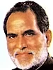

-
15 August 1947 - 27 May 1964†

Jawahar Lal Nehru
Jawaharlal Nehru was born on 14 November 1889 in Allahabad in British India. His father, Motilal Nehru a self-made wealthy barrister who belonged to the Kashmiri Pandit community.
Period 16 years, 286 days
-
27 May 1964 - 9 June 1964
Gulzari Lal Nanda
Gulzarilal Nanda BR (4 July 1898 - 15 January 1998) was an Indian politician and economist who specialized in labour issues.
Period 13 days
-
9 June 1964 -11 January 1966†
Lal Bahadur Shastri
Shastri was born on 2 October 1904 at the home of his maternal grandparents in a Kayastha family. Shastri's paternal ancestors had been in the service of the zamindar of Ramnagar, Varanasi and Shastri lived there for the first year of his life.
Period 1 year, 216 days
-
11 January 1966 - 24 January 1966
Gulzari LalNanda
JNanda was born on 4 July 1898 in Sialkot in the Punjab, British India in a Punjabi Hindu Khatri family. Sialkot later became a part of the Punjab Province of Pakistan in 1947, after the partition of India..
Period 13 days
-
24 January 1966 - 24 March 1977
Indira Gandhi
Indira Gandhi was born Indira Nehru, into a Kashmiri Pandit family on 19 November 1917 in Allahabad.Her father, Jawaharlal Nehru, was the first Prime Ministers of India.
Period 11 years, 59 days
-
24 March 1977 - 28 July 1979
Morarji Desai
Morarji Desai was born into a Gujarati Anavil Brahmin family.[5][6] His father's name is Ranchhodji Nagarji Desai and his mother's name is Vajiaben Desai..
Period 2 years, 126 days
-
28 July 1979 - 14 January 1980
Charan Singh
Charan Singh was born in Jat family on 23 December 1902 in the village Noorpur, Meerut district, United Provinces of Agra and Oudh (present-day Uttar Pradesh). He was a good student, and received a law degree in 1926 from Agra University.
Period 170 days
-
14 January 1980 - 31 October 1984

Indira Gandhi
Indira Priyadarshini Gandhi was an Indian politician and a central figure of the Indian National Congress. She was the 3rd prime minister of India and was also the first and, to date, only female prime minister of India.
Period 4 years, 291 days
-
31 October 1984-2 December 1989

Rajiv Gandhi
Rajiv Ratna Gandhi was an Indian politician who served as the sixth prime minister of India from 1984 to 1989. He took office after the 1984 assassination of his mother Indira Gandhi.
Period 5 years, 32 days
-
2 December 1989 - 10 November 1990

V P Singh
Vishwanath Pratap Singh (25 June 1931 27 November 2008), shortened to V. P. Singh, was an Indian politician who was the 7th Prime Minister of India from 1989 to 1990 and the 41st Raja Bahadur of Manda
Period 343 days
-
10 November 1990 -21 June 1991
Chandra Shekhar Singh
Chandra Shekhar Singh ( 17 April 1927 8 July 2007) was an Indian politician who served as the 8th Prime Minister of India, between 10 November 1990 and 21 June 1991.
Period 223 days
-
21 June 1991 - 16 May 1996
P. V. Narasimha Rao
Pamulaparthi Venkata Narasimha Rao (28 June 1921 - 23 December 2004) was an Indian lawyer and politician who served as the 9th Prime Minister of India from 1991 to 1996.
Period 4 years, 330 days
-
16 May 1996 - 1 June 1996
.jpg.webp)
Atal Bihari Vajpayee
Atal Bihari Vajpayee[a] (25 December 1924 - 16 August 2018) was an Indian politician and diplomat who served three terms as the prime minister of India, first for a term of 13 days in 1996, then for a period of 13 months , followed by a full term from 1999 to 2004.
Period 16 days
-
1 June 1996 - 21 April 1997
H D Deve Gowd
Haradanahalli Doddegowda Deve Gowda ( born 18 May 1933) is an Indian politician from the state of Karnataka. He served as the 11th prime minister of India from 1 June 1996 to 21 April 1997.
Period 324 days
-
21 April 1997 - 19 March 1998
Inder Kumar Gujral
Inder Kumar Gujral (4 December 1919 - 30 November 2012) was an Indian diplomat, politician and freedom activist who served as the 12th prime minister of India from April 1997 to March 1998
Period 332 days
-
19 March 1998 - 22 May 2004
Atal Bihari Vajpayee
Atal Bihari Vajpayee[a] (25 December 1924 - 16 August 2018) was an Indian politician and diplomat who served three terms as the prime minister of India, first for a term of 13 days in 1996, then for a period of 13 months , followed by a full term from 1999 to 2004.
Period 6 years, 64 days
-
22 May 2004 - 26 May 2014

Manmohan Singh
Manmohan Singh (Punjabi: born 26 September 1932) is an Indian economist and statesman who was the 13th prime minister of India from 2004 to 2014
Period 10 years, 4 days
-
26 May 2014 - Incumbent

Narendra Modi
Narendra Damodardas Modi (Gujarati: born 17 September 1950)[a] is an Indian politician serving as the 14th and current prime minister of India since 2014.
Period 9 years, Continue